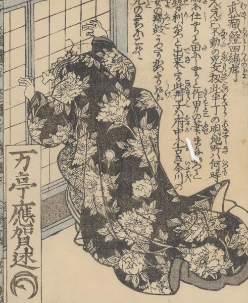

← 图鉴索引

猫魔舘。猫魔が女性に化けて、障子を破り顔を突っ込んでいる。牡丹の文様。
著作者：一陽齋豊國ほか／出典：親書誌：U426_nichibunken_0444：庭訓武藏鐙／日付：2017／資源識別子：U426_nichibunken_0444_0006_0000
Copyright (c)2010- International Research Center for Japanese Studies, Kyoto, Japan. All rights reserved.